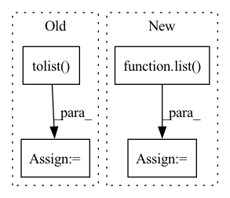

Pattern ID :39802
Before Change
self.rfe_feature_rank=selector.ranking_
df= pd.DataFrame(list(zip(self.feature_names, self.rfe_feature_rank.tolist())), columns=["Feature", "Rank"])
best_features_scores=df.sort_values(by=["Rank"], ascending=True)[:num_features]
best_features_names= best_features_scores.Feature.tolist()
best_features_table=self.feature_table[best_features_names+[self.label_column]]
return best_features_scores, best_features_names, best_features_table
After Change
self.selector.fit(self.train_features, self.train_labels)
self.rfe_feature_rank=self.selector.ranking_
df= pd.DataFrame(list(zip(self.feature_names, self.rfe_feature_rank.tolist())), columns=["Feature", "Rank"])
best_features_names= [x for x,v in list( zip(G.feature_names, G.selector.support_.tolist())) if v==True]
best_features_scores=df.sort_values(by=["Rank"], ascending=True)
best_features_table=self.feature_table[best_features_names+[self.label_column]]
return best_features_scores, best_features_names, best_features_tableIn pattern: SUPERPATTERN
Frequency: 3
Non-data size: 4
Instances Fragment ID: 113353259
Project Name: radtorch/radtorch
Commit Name: a4dccc68cb4935fe0222e31d045079d0523ea640
Time: 2020-04-11
Author: elbanan@users.noreply.github.com
File Name: radtorch/test.py
M Class Name: Feature_selection
N Class Name: Feature_selection
M Method Name: rfe(3)
N Method Name: rfe(4)
M Parent Class: Classifier
N Parent Class: Classifier
M File Name: radtorch/test.py
N File Name: radtorch/test.py
M Start Line: 171
M End Line: 179
N Start Line: 170
N End Line: 175
Before Change
indexes = np.c_[indexes[0],indexes[1]]
neg_index = rs.choice(np.arange(len(indexes)), size=int(np.sum(A_u)))
neg_edges = indexes[neg_index].tolist()
len_val = int(prob_val*len(row))
len_test = int(prob_test*len(row))
After Change
undirect_edge_index = to_undirected(edge_index)
neg_edges = negative_sampling(undirect_edge_index, force_undirected=False).numpy().T
neg_edges = map(tuple, neg_edges)
neg_edges = list( neg_edges)
len_val = int(prob_val*len(row))
len_test = int(prob_test*len(row))
Fragment ID: 113353258
Project Name: sherylhyx/pytorch_geometric_signed_directed
Commit Name: eeeffe159fa0bd2b54e276e7605f8aaa238d8202
Time: 2022-02-18
Author: xzhang15@wpi.edu
File Name: torch_geometric_signed_directed/utils/directed/directed_link_split.py
M Class Name: AnonimousClass
N Class Name: AnonimousClass
M Method Name: directed_link_class_split(8)
N Method Name: directed_link_class_split(8)
M Parent Class:
N Parent Class:
M File Name: torch_geometric_signed_directed/utils/directed/directed_link_split.py
N File Name: torch_geometric_signed_directed/utils/directed/directed_link_split.py
M Start Line: 104
M End Line: 168
N Start Line: 100
N End Line: 162
Before Change
t = t + T(_dot(_dot(u / s[..., np.newaxis, :], T(gv)), i_minus_vvt))
np.copyto(out, t)
s = jt.array(x.shape).data.tolist()
m, n = x.shape[-2:]
k = np.min((m, n))
k = int(k)
s1 = copy.deepcopy(s)
s1[-1] = k
s2 = copy.deepcopy(s)
s2[-2] = k
s3 = s[:-2]
s3.append(k)
After Change
k = min(m, n)
s1 = list(x.shape)
s1[-1] = k
s2 = list( x.shape)
s2[-2] = k
s3 = list(x.shape)[:-2]
s3.append(k)
Fragment ID: 113353261
Project Name: jittor/jittor
Commit Name: eda31dcacf6f1de52daecb1f6c6f5fc7c93dbb41
Time: 2020-08-11
Author: randonlang@gmail.com
File Name: python/jittor/linalg.py
M Class Name: AnonimousClass
N Class Name: AnonimousClass
M Method Name: svd(1)
N Method Name: svd(1)
M Parent Class:
N Parent Class:
M File Name: python/jittor/linalg.py
N File Name: python/jittor/linalg.py
M Start Line: 10
M End Line: 67
N Start Line: 67
N End Line: 73